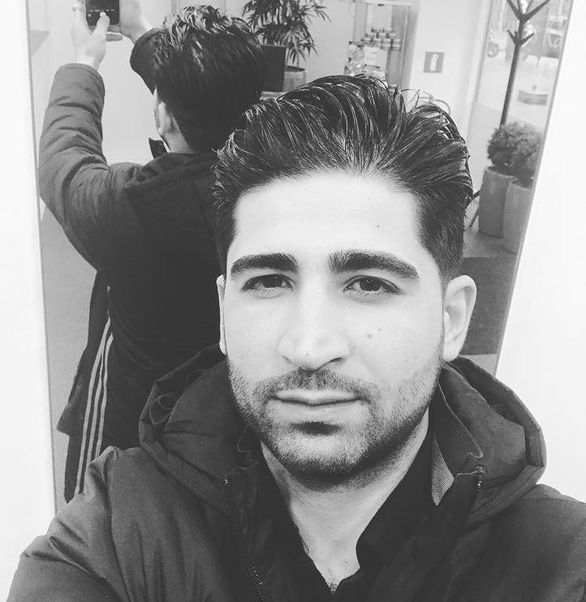

Biografie

Ramyar Mohamad beter bekend als "Rami" is een kapper en eigenaar van Rami's Kapsalon. Sinds klein heeft hij grote interesse in de kapperswereld, waardoor hij al sinds zijn 12e kapper was en zo ging hij langzamerhand in de kapperswereld groeien. Met alleen nog 17 jaar oud was Rami Nederlandse kampioen geweest met knippen. Later op zijn 21ste heeft Rami een eigen kapperszaak opgestart.